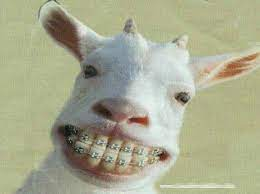
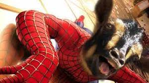
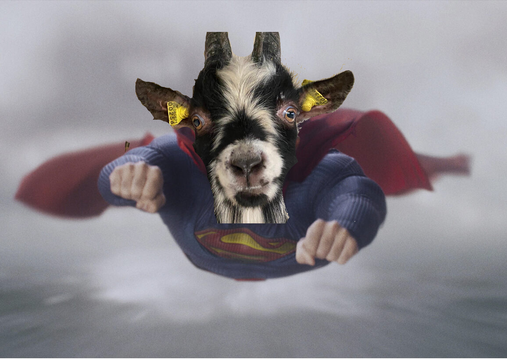

Ged
Alt om en ged
Fact:

En ged kan være både sød og nuttet...

Men også mega grim
Mange kender en ged for at være et dyr man kan klappe i zoo, eller et dyr på en bondegård, som bare står og ser dum ud, og lugter. Men der kan jeg så informere om, at de har... Fuldstændigt ret. Ja du hørte rigtigt. En ged kan være utruligt sød (og dum) men den kan egentlig ikke bruges til så meget, udover at den laver mælk, men det har vi køer til. Så hvorfor iksistere de her nuttede, men knap så godt lugtende dyr? Her er lidt om gedens historie: Den nedstammer fra bezoargeden, der for 8000-9000 år siden var et af de første dyr, der blev domesticeret af mennesket. Jeg går ud fra at folk tæmmede den fordi den er et nemt offer, og fordi den både kan give mad og mælk, og et godt grin en gang imellem. Personligt ville jeg være kæmpe fan af at man lavede noget superhero fiction bare med geder, f.eks. spiderged eller superged.
 